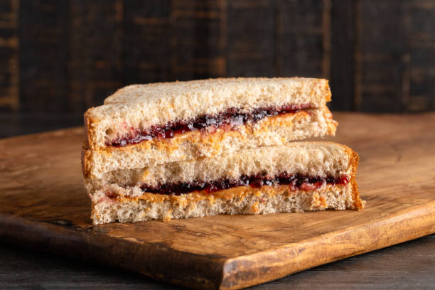

One of my favorite things to eat is a delicious peanut butter and jelly sandwich. The saltiness of the peanut butter, the sweetness of the jelly, and the soft white bread. The perfect snack for any day, and you can even double up and make it a meal. Feel free to experiment with the peanut butter and jelly choices! Creamy, crunchy, honey, even hazelnut spread. You can also use any jelly, jam, or preserve. Mix and match and see which combo you like the best!